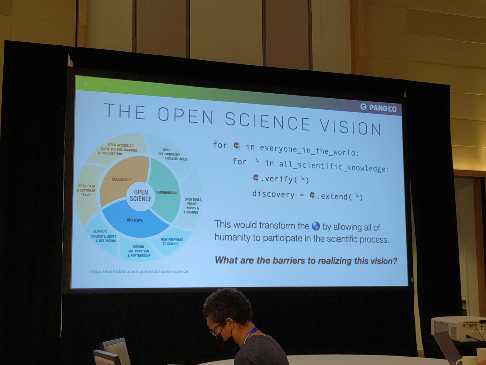

RT @ramiroaznar: I have built a very basic tests for spatial columns for my @getdbt project. I am thinking about building an OS dbt package…
It's July! 50 % of the year is gone in a puff of smoke üí® make the other 50 % count! üí™üèº
Replying to @JaimeObregon
https://twitter.com/fred_SSC/status/1542549651164995584
Replying to @alewkowycz
RT @orchestofficial: Check out Data Overload Vol. 11, the latest edition of our monthly newsletter! ⚡
https://mailchi.mp/bf51fa498f73/orchest-in-2022-data-overload-vol-11
Highlights:…
Replying to @hynek and @willmcgugan
Just to add some nuance to the mix I don't think "libertarian" is the other side of "the left". There's libertarian right, and authoritarian left too.
open-source and Free-as-in-Freedom both have libertarian roots, but the ethical/do-no-harm licensing movements deviate from them
Replying to @mariagrandury, @SomosNLP_ and @huggingface
Eres una crack, felicidades y muchos éxitos! Espero que coincidamos en algún momento!
Replying to @ClariceDAiello
It's heartbreaking to see bright, passionate people leaving academia. But I'm sure you will find success and happiness outside of it. Godspeed!
Replying to @apachaves, @pdm_project, @textualizeio and @willmcgugan
I have, and it's my favourite tool for Python packaging so far. PDM 2.0 looks amazing by the way! https://twitter.com/juanluisback/status/1494084401063411721
RT @KhoaVuUmn: When you wrote "Data is available upon request" in your paper and they emailed to request it.
RT @anajsana95: For those who don't know, I have an account where I share tutorials on how to use different #OpenSource tools for Illustrat…
RT @cmaureir: Hey there community organiser üëã I have been struggling for a really long time about people not reading rules/norms in chat pl‚Ķ
RT @RemyLevin: I've been using Mendeley Desktop daily for years, & have an annotated library of thousands of pdfs. Today, I switched to Zot…
RT @Mridul_Seth: We have a Maintainers track at @SciPyConf 2022! If you are interested in knowing more about packaging @condaforge, wheels,…
Replying to @cmaureir
I share your pain... Maybe the solution is to accept that people won't read the docs, use the right channel, or search for previous similar questions ever, and rely on the community to kindly redirect them to the right place. But it turns out that enforcing kindness is also hard.
Replying to @cmaureir
Perhaps the rules should be the bare minimum ("adhere to this CoC or otherwise you might get kicked out, full text here, you have been warned") and let it go. There will be repeated questions, difficult-to-understand inquiries... But maybe "rules" won't stop that, only mentoring.
Replying to @edublancas and @ploomber
üôåüèºüôåüèºüôåüèº See you there!
RT @SciPyConf: As our community prepares to come together next week, in person for the first time since 2019, we want to share our thoughts…
Vendo entrada para @QueenWillRock mañana!
https://www.ticketswap.com/listing/queen-adam-lambert/6915513/2608bcab3c?utm_campaign=publishedListingShare&utm_source=ticketswap&utm_medium=manualshare
RT @orchestofficial: üö® Big news üö® We just released the Kubernetes-based Orchest version to Orchest Cloud!
All newly created instances will…
Replying to @rabernat, @davidbrochart and @choldgraf
Would there be a way to have a UI-only JupyterLite that uses a remote kernel, rather than leveraging Pyodide for the computation?
Replying to @TimMorrisDev and @drvinceknight
I love how you structured it following https://diataxis.fr :) thanks for sharing indeed!
RT @SciPy_team: Our next community meeting is moved to July 13th to prevent conflicts with @numpy_team's community meeting. No more excuses…
Replying to @HEPfeickert and @kwinkunks
Welp, happened to me again https://github.com/pytest-dev/pytest/discussions/10109
Replying to @avolakatos
Some other events are fully booked months in advance like @PyConES. YMMV.
Replying to @avolakatos, @PyConES and @jesslynnrose
Weird take, I usually don't pay attention to the beauty of the surroundings to attend conferences, but maybe I misunderstood. In any case, I respect your choice!
Replying to @asmeurer
Don't know if it's your case, but if that email comes from a mailing list, it's most likely Mailman's fault https://doc.coker.com.au/internet/dkim-and-mailing-lists/, https://nanoy.fr/post/dkim-and-mailman3/
Replying to @MShahrad
LaTeX has many problems, but removing a comma on page 1 and a paragraph moving in page 10 ain't one, its layout mechanism is much more elastic than Word in my experience - unless this is supposed to be just a joke ;)
Replying to @medialabMM
¿Cómo nos suscribimos? (Un enlacito habría estado bien...)
RT @EuroSciPy: Would you really love to join #EuroSciPy but can’t afford it? We might be able to help you!
We just opened our Financial Aid…
RT @willmcgugan: Someone who does this very well is @tiangolo He builds on a foundation of existing libraries to go the last mile to the de…
RT @erinmikail: Sometimes community building is about casting your net wide and seeing who bites üé£
Who wants to join me for an @OrbitModel…
Replying to @erinmikail and @OrbitModel
Been using @OrbitModel for @PyDataMadrid, @poliastro_py, and @orchestofficial - happy to chat and sure I love swag üòÑ
Replying to @matplotlib and @scientific_py
Does this mean that future entries will appear in https://blog.scientific-python.org/ ? üòÅ
RT @cnpryer: Context: Build more intelligent queries with #polars #dataframe https://youtu.be/GvYeBHNGlvM?t=1509
RT @dennyperez18: üì¢Hola Comunidad de desarolladores de Pythonüêç
¡Únete a la conferencia #PyConLatam2022!üòä
CFP:üëá
http://papercall.io/pyconlatam22
P…
RT @bigdata: 1/ This week on #TheDataExchangePod: @RickLamers, co-founder @orchestofficial, & co-creator of Orchest, an open source data or…
Replying to @ahachete, @tobias_petry, @polebitwy and @DevrimGunduz
This all reads like a huge mess and it's not clear at all why this path was chosen. Would be good to have full transparency on the timeline of what happened from both sides instead of communicating through announcements and blog posts.
Replying to @ahachete, @tobias_petry, @polebitwy and @DevrimGunduz
I've read yours and it's very clear. What's not clear is the reasons on the other side and how did they arrive to the conclusion that you were working against the community.
RT @cmaureir: Se viene una PyCon en Bolivia! üéâüêç
RT @DawnWagesSays: Mid to senior Python and Django devs interested in building tools for Research? EST timezone, Philadelphia preference.…
RT @SciPyConf: We're ready for you #SciPy2022! Check out the swag at @enthought HQ üëÄ
#SciPy #python
Now that we're talking about critical Python projects on #PyPI, let me say that being on the long tail of open source is often hard. I've spent a significant chunk of my vacation working on @poliastro_py - which is fun, but I also wonder if I could have used my time differently.
Replying to @juanluisback
Some high-profile projects get tons of love, for example @tiangolo's or @willmcgugan's. They do get some hate though, which is another problem.
But asking for opinions or testimonials on your users mailing list and getting *nothing* makes me wonder who or what am I working for.
Replying to @juanluisback
And yes, it's Friday 22:17 local time, and I've been the whole evening on the computer...
If you use open source (and I bet you do), consider taking some time to send some love to their maintainers. In the absence of money, they will probably love it.
RT @DataPolars: #Python #polars 0.13.52 is just released.
This is the first python release that has NO required external dependencies.
T…
RT @permutans: üì∫ @juanluisback ‚Äì Beyond Pandas: The Great Python Dataframe
Showdown https://youtu.be/GvYeBHNGlvM
üíæ https://github.com/astrojuanlu/talk-dataframes
üéûSlid‚Ķ
RT @pyconcolombia: üì¢ In minutes the talk of our speaker Cristián Maureira-Fredes will start, you can't miss it !! üêç
Still don't have your…
RT @TambeAchere: https://youtu.be/g3vX4zKMmrs
Tomorrow I will fly to Austin, Texas, USA for #SciPy2022. I'll be around the whole week, if you see me there please say hi! https://twitter.com/SciPyConf/status/1545493913967927297
Replying to @juanluisback
Unofficial #SciPy2022 objectives:
1⃣ Go to as many live music bars as I can üé∏
2⃣ Find the best tex-mex food in town üåØ
Replying to @cahdoria_
Count on it! üí™üèº
Replying to @Mbussonn
ETA 03:54PM local time, so I expect to be available at around 6-7pm (hopefully!)
Replying to @HEPfeickert
Yay! üôåüèº
Replying to @Mbussonn
RT @Camwoodstock: Years later, don't let this shit go unnoticed.
The internet archive is home to:
• many of Wikipedia's sources
• many oth…
RT @poliastro_py: üì£ poliastro 0.17.0 is available üì£
https://docs.poliastro.space/en/0.17.x/changelog.html#poliastro-0-17-0-2022-07-10
Install it with
pip install "poliastro==0.17.0"
mamba instal…
I've been five hours using @KLM WiFi and, even if it's slow, it still feels like magic ✨ #SciPy2022
RT @pyblogsal: I cannot believe I am writing this, but the cursed üëª release of Python 3.11.0b4 is finally available üò±üöÄüöÄüöÄ
Please, please, p…
üé∏ Here I am
I'm the master of your destiny
I am the one, the only one
I am the god of kingdom come
Gimme the prize üé∏
#SciPy2022
Replying to @ahachete
First thing I did, mission accomplished!
Replying to @juanluisback
üéµ Cuando Dios hizo el Ed√©n
Pens√≥ en Am√©rica üéµ
Replying to @juanluisback
Perfect first day in Austin
RT @ubernostrum: Yes, I have opinions on your open source contributions:
https://www.b-list.org/weblog/2022/jul/11/pypi/
Thank you, @BigscienceW, for going above and beyond what Microsoft, OpenAI, Google, and Meta offer, and giving us not the AI we deserve, but the one we need. https://twitter.com/BigscienceW/status/1546787153207853056
RT @orchestofficial: Orchest v2022.07.2 finally features GKE and EKS installation instructions, as well as other #kubernetes implementation…
RT @github: You’ve seen the photos, now dive into the story behind Astropy, the open source technology being used to help the James Webb Sp…
Replying to @sarthakgh
I converted to @joplinapp and I'm not looking back, even if it's not flawless (I sometimes get synchronization conflicts and very slow speed, although I suspect it's @Nextclouders's fault)
RT @qntm: Extremely good quote which reflects my own sentiments about permissionless blockchains
https://www.pcgamer.com/developer-turns-future-of-gaming-talk-into-a-surprise-attack-on-conventions-nft-and-blockchain-sponsors https://t.co/z97D…
Very insightful thread. I think it's relevant to the index vs no-index conversations in Python dataframe libraries too: @datapolars is already doing a fantastic job at making index-free dataframes efficient, although we lose the "semantics" @dutc_training
https://twitter.com/teej_m/status/1546591451051528192
Replying to @mrm8488
They're 70 % useless T_T
I know this sounds weird but I'm actually enjoying walking under Austin's unforgiving, blazing heat #SciPy2022
Replying to @PamphileRoy, @alexdesiqueira, @InessaPawson, @juanitagomezr and @JarrodMillman
Yessss üòç Missing you @alexdesiqueira !!
Replying to @TerraMeijar
I feel it as dry heat, it was like 41¬∞C today - so, not bad! Bearable, that's for sure üòÅ
Awesome #SciPy2022 reception evening at @enthought HQ meeting in person @ReaderMeter, @HEPfeickert, @juanitagomezr, @edublancas, @tkoyama010, and the one and only @LorenaABarba, the creator of... the *other* @AeroPython üòÑ
See you tomorrow at the first day of talks!
Hello #SciPy2022! Heading to the first day of talks üòç Follow me for some live tweeting!
Replying to @juanluisback
#SciPy2022 is getting started!

RT @dillonniederhut: Best SciPy conference **so far** üí™
#growthmindset #SciPy2022
Replying to @BenBlaiszik
about to start his keynote virtually at #SciPy2022
Replying to @BenBlaiszik
https://funcx.org/ "Federated function as a service", source code at https://github.com/funcx-faas/funcX #SciPy2022
Replying to @juanluisback
My question to the first keynote of #SciPy2022
RT @BenBlaiszik: @juanluisback funcX is an amazing technology. Check it out https://www.funcx.org.
Replying to @emilywselwood and @poliastro_py
Yesss @jorgepiloto16 made them for #OSCW19 in Athens üòç
Replying to @juanluisback
Reviewers can push back if research inputs/artifacts are not provided üëä Thanks @BenBlaiszik #SciPy2022
RT @HEPfeickert: @juanluisback üî• So important too. @BenBlaiszik is a passionate advocate for openness of data and code in publications, so‚Ķ
Replying to @juanluisback
And now, the tools plenary at #SciPy2022! Zach H. D. presents Hypothesis with a good hook: "write tests that Karl Popper would approve" üòú https://hypothesis.works/
Replying to @juanluisback
Tyler Reddy does a @SciPy_team update at #SciPy2022: the improvements in build time are impressive!
Replying to @SciPy_team
Matt Craig updates us about @astropy and asks for a round of applause for the people that worked on the first #JWST release ü§© #SciPy2022
Replying to @juanluisback
Further updates for Awkward Array, @scientific_py, @scikit_learn at #SciPy2022 (can't keep up!)
RT @astropy: @juanluisback @SciPy_team More specifically, the software engineers üòÉ who do much of the critical but unrecognized work
Replying to @scientific_py and @scikit_learn
First talk of the Machine Learning & Data Science track at #SciPy2022: @thomasjpfan on Poisson Regression
RT @dillonniederhut: New in @scikit_learn 1.1
- bisecting k-meams
- mini batch NMF
- quantile loss in histogram GBM (like a quantile light…
RT @HEPfeickert: At the #SciPy2022 SciPy Tools Plenary Session @JimPivarski is sharing a 90 second update on what’s upcoming in #ScikitHEP’…
Replying to @melissawm
Mine is @anajsana95!
Replying to @juanluisback
TIL: scikit-lego https://scikit-lego.netlify.app/ #SciPy2022
Replying to @juanluisback
Next up: "Python vs the pandemic" ü¶† #SciPy2022
RT @scientific_py: @JarrodMillman talking about the Scientific Python project! Join us at our BOF sessions on Thursday at @SciPyConf!
July…
Replying to @juanluisback
Interesting idea: "tiered collaborators", similar to @choldgraf "key stakeholders" proposal #SciPy2022 (didn't have time to photograph the slide) https://mobile.twitter.com/choldgraf/status/1545729826056716289
Replying to @juanluisback
My talk "Per Python ad astra: interactive Astrodynamics with @poliastro_py" at #SciPy2022 is set to start at 2:35pm CDT (19:35 UTC). See you there!
RT @juanluisback: My talk "Per Python ad astra: interactive Astrodynamics with @poliastro_py" at #SciPy2022 is set to start at 2:35pm CDT (…
RT @HEPfeickert: That‚Äôs a wrap for the physics and astronomy mini-symposium at #SciPy2022! üöÄ A big thank you to all of our great speakers:‚Ķ
Replying to @HEPfeickert, @astronomatty and @Michael_Zingale
Thanks @HEPfeickert and the rest of the co-chairs!
Replying to @poliastro_py
And it happened! Materials of the talk are online https://github.com/astrojuanlu/scipy-us-2022-poliastro-talk see you around at #SciPy2022!
RT @HEPfeickert: Today in his #SciPy2022 talk "Per Python ad astra: interactive Astrodynamics with poliastro" (https://github.com/astrojuanlu/scipy-us-2022-poliastro-talk) @ju…
Replying to @poliastro_py
https://mobile.twitter.com/HEPfeickert/status/1547328708083580930
Replying to @poliastro_py
Now Davina Zamanzadeh talking about how to *ampute* data... so we can learn how to better *impute* it! #SciPy2022 https://github.com/RianneSchouten/pyampute
Replying to @juanluisback
Demo using @DeepnoteHQ #SciPy2022 https://deepnote.com/
Replying to @HEPfeickert
And it's almost ready for JupyterLab compatibility! https://github.com/damianavila/RISE/pull/605
Replying to @juanluisback
Ready for lightning talks! ‚ö°Ô∏è @nicholdav and @munkium cheering up the audience with some puns. Not enough queso in them yet though üòú #SciPy2022
Replying to @davidbrochart
Just attended a lightning talk at #SciPy2022 that mentioned "Jupyter kernels as a service"! (JKAAS üòÇ) https://conda.store/
Replying to @juanluisback
Squirrel recognition, Jupyter kernels as a service, and good puns #SciPy2022 https://mobile.twitter.com/juanluisback/status/1547346150897995779
Replying to @juanluisback
Extremely cool talk by @GuenP! Only a few millikelvin of thermodynamic temperature ü§™ #SciPy2022
Replying to @juanluisback
On to the second day of #SciPy2022! Very soon, "Python’s Contribution to Astronomy and Major Space Telescope Missions"
Replying to @juanluisback
Using the "hallway track" a lot today üòä but thrilled to see the mighty @yuvipanda from @2i2c_org on stage! And good news from @ProjectJupyter too #SciPy2022
Replying to @juanluisback
#SciPy2022

RT @juanluisback: #SciPy2022
Replying to @JOSS_TheOJ
going strong, and they don't charge thousands of dollars for APC! Sorcery? üòú #SciPy2022
Replying to @JOSS_TheOJ and @rabernat
about @pangeo_data: "we want everyone to be able to verify the scientific progress" ❤️ #SciPy2022

Replying to @rabernat
"Emphasis on files as a medium of data exchange creates lots of work for scientists - Most file-based datasets are a mess" @rabernat üëèüèº #SciPy2022
RT @LorenaABarba: Ryan Abernathy @rabernat is tracing our path to a future of ubiquitous and modern #OpenScience, with "analysis ready, cl…
Replying to @juanluisback
Amazing talk! I finally got to see @pangeo_data and https://pangeo-forge.org/ in action ü§Ø #SciPy2022
Replying to @juanluisback
Learning more about the history of scikit-hep from @HenrySchreiner3 at #SciPy2022
Replying to @juanluisback
The room is packed for the @scientific_py coordination Birds of a Feather session! #SciPy2022
Replying to @scientific_py
Someone asks: what happened to @pyOpenSci? #SciPy2022
Replying to @juanluisback
I've been having lots of insightful conversations with folks but I won't lie: I'm completely exhausted üòÖ now recharging batteries so I can enjoy the lightning talks! #SciPy2022
Replying to @juanluisback
Aaaaand last day of talks at #SciPy2022! This is coming to and end... But lots of interesting stuff is awaiting!
üéµüòäüéµ https://twitter.com/JayAlammar/status/1547945391294795776
RT @HEPfeickert: Big news: @NumFOCUS will be the organizational stewards of @SciPyConf starting with #SciPy2023!
Replying to @juanluisback
#SciPy2023 and beyond will transition to @NumFOCUS! üëèüèºüëèüèºüëèüèºüëèüèºüëèüèº Thank you @enthought for your continued work over the years for this event. They will keep being institutional sponsors!
Replying to @NumFOCUS, @enthought and @juanitagomezr
talking about @scientific_py! (Also waving to all Colombians in #SciPy2022 üá®üᥠüëã)
Replying to @juanluisback
üîîSubscribe to @scientific_py YouTube channel! https://www.youtube.com/c/ScientificPython-org üîî #SciPy2022
RT @poliastro_py: From our mailing list: "Turning TLEs into state vectors is not nearly enough. Range, range rate, visibility calculations,…
Replying to @juanluisback
Impressive numbers for @condaforge ü§Ø @__mvn__ and @wuoulf on stage #SciPy2022
Replying to @PlausibleHQ
being used to track activity in @scientific_py #SciPy2022 cc @eu_alternatives
RT @ivanov: My dear #SciPy2022 friends,
a few of you asked what I used for the visual effect in my lightning talk.
The terminal emulator…
Replying to @jorgepiloto16
presenting the optimal date to organize a SciPy conference on planet Mars in 2123 with @poliastro_py üòç #SciPy2022
Replying to @jorgepiloto16 and @poliastro_py
Also, very interesting talk by @HEPfeickert about reproducibility with pip, inspired by https://github.com/brettcannon/pip-secure-install. Wondering if a secure-only, pip-like CLI could be built using @frostming90 unearth #SciPy2022
Replying to @juanluisback
Aaaaaaaaand that's a wrap! Had a great time at #SciPy2022, see you all at the sprints tomorrow and to the rest, take care! üëãüèº
RT @juanluisback: Aaaaaaaaand that's a wrap! Had a great time at #SciPy2022, see you all at the sprints tomorrow and to the rest, take care…
Replying to @juanluisback
Also, never forget #SciPy2022 https://mobile.twitter.com/jakevdp/status/774392535653322753
Replying to @melissawm
I saw your name in so many presentations, your presence was felt from the distance <3
RT @SciPyConf: Our community is üî•. Thankful for @enthought serving as organizer of our flourishing conference since founding it over 20 yea‚Ķ
RT @poliastro_py: There's a poliastro + friends sprint going on right now at #SciPy2022! @juanluisback will be comparing poliastro with Spi…
RT @tkoyama010: Thanks for all the attendance at the PyVista sprint in the #Scipy2022 sprint on the first day! We had a great discussion an…
Replying to @DegenerateConic
I asked exactly that at the @anacondainc booth üòÑ (and the answer is "not really", but now that https://peps.python.org/pep-0668/ has been accepted, we might see improvements here
RT @readthedocs: Today we want to highlight the "setuptools" docs and some nice features from it!
“Setuptools is a fully-featured, activel…
Replying to @reydelhumo
"Use pipewire"
Waiting for my flight to Madrid üõ´ See you soon Austin! #SciPy2022
RT @readthedocs: Did you know that Read the Docs supports overriding the full build process? Now you know üòâ
This is a beta feature that we…
RT @fede_gr: Today at @nixtlainc, we are excited to release the fastest ‚ö°Ô∏è version of the Exponential Smoothing (ETS) model for #Python. üêç‚Ķ
So concise, yet so important. Totally recommended read: what do we want for the next decade in #SciPy (and I would add, #PyData)? https://twitter.com/mrocklin/status/1549431472532111362
RT @reydelhumo: Re-Tweeting this because I'm also interested on this now and wanted to bump it up in your feed üòÄ
Replying to @umairh
How can you be so utterly wrong? More investment and more technology won't save us.
We need less. Less consumption, fewer cars, less luxury, less corporate greed, much less waste.
The only path to sustainability is #degrowth and systemic change. Otherwise, see you at The Event.
Replying to @jakevdp
Basically every event I go I'm giving a fun lightning talk called "this is not the pandas logo" and putting your tweet at the end of it üòÉ Example: @pydatalondon one month ago https://youtu.be/NtypFPaMGD0?t=2419
Replying to @DotCSV
"Puliendo sesgos" becario style üòâ https://twitter.com/jd_pressman/status/1549523790060605440
"Mentoring" is scheduling a 30 minutes meeting and ending up having a 2-hour meeting.
Replying to @ocefpaf, @HEPfeickert and @asmeurer
Oh wow, I wish Sphinx could use this to generate PDF docs cc @reydelhumo
Sorpresa de último minuto: mi charla "Más allá de pandas: comparativa de dataframes en Python" ha sido aceptada para la #PyConES22 üòç ¡Nos vemos en Granada! https://2022.es.pycon.org/
RT @e_mydata: In order to help more people switch to /e/OS easily, we are constantly looking to extend the support of the easy installer to…
Searching for #SEO tips for #SaaS products: plenty of information about landing pages, not so much about documentation.
My feeling: keywords on docs should be related to the name of the product, whereas keywords on landing pages should refer to the product category.
Thoughts?
Replying to @juanluisback
I was originally inspired in some PRs by @scharlottej13 to the @dask_dev documentation. But Dask is an established product, so not sure the same rules apply. Wondering if @remoquete, @ericholscher, or @peer_rich have thoughts about this.
https://github.com/dask/dask/pull/9182
That was unexpected üò≥ Mum, I'm famous! https://twitter.com/jreback/status/1550169169198456834
Replying to @TerraMeijar
Impostor syndrome kicking in? :(
Replying to @TerraMeijar
Hahahaha wth
Replying to @CrisConRu
I don't need to read the rest of the thread to know they're probably talking about @ApacheParquet üòÑ
Noticias sobre Python cient√≠fico de la semana, episodio 41 üêç‚öôÔ∏èüá∫üá∏ Especial #SciPy2022
https://astrojuanlu.substack.com/p/episodio-41-especial-scipy-us
Apoya el noticiero suscribi√©ndote por correo üì´
Replying to @__mharrison__
I love pandas but I find @DataPolars to be super expressive and it brings some new ideas to the table. I gave it a try and was very impressed: https://www.orchest.io/blog/the-great-python-dataframe-showdown-part-3-lightning-fast-queries-with-polars
Replying to @criszamorano
¡Gracias! üôèüèº
Replying to @Jimena_y_yo and @PyConES
QUEEN üëë
Replying to @brenna_axon
Source?
RT @orchestofficial: "Should You Use Apache Airflow?" by @SeattleDataGuy ✍️
https://medium.com/coriers/should-you-use-apache-airflow-e71c6cf7c0c4
Summary of downsides:
1⃣ Scaling is…
RT @LorenaABarba: The #NASATOPS community is developing five learning modules as part of the OpenCore curriculum:
1. Ethos of Open Science…
RT @python_es: Tres generaciones de presis de Python Espa√±a üêç
Ya nos conoces?
Replying to @python_es, @dukebody and @Jimena_y_yo
Solo faltó @qkolnek!
RT @willmcgugan: I'm hiring for Textualize again. We're looking for #Python developer(s) to join us.
üêç Very strong (technical) Python skil‚Ķ
Replying to @garrrikkotua
I would say "source available" is what the majority of individuals care about (being able to see the source to fix their problems). But I have no data to back this up. Perhaps there is indeed a majority that cares about licenses, copyleft etc?
RT @PyDataMadrid: ¡Recuerda! Nos vemos este jueves en @IronhackMAD para poner modelos de machine learning en producci√≥n üî• Se agradece RT!
RT @pradyunsg: I'm quite happy that this one landed!
Replying to @B0rjitaaa, @python_es, @dukebody and @Jimena_y_yo
Gracias! Ojalá pudiese volver a darla con todo lo que aprendí en estos cinco años...
This tweet and blog post have been living rent-free in my head for one month already. I think problem-solution ordering explains so many things in life... https://twitter.com/TartanLlama/status/1537478980739256320
Replying to @python_es, @dukebody and @Jimena_y_yo
Si llego a saber que iba a tener tanto √©xito el tweet lo mismo me hubiera puesto una camiseta más apropiada para la ocasi√≥n... üòÖ
Pero bueno, que viva el @InquilinatoMad
Replying to @pradyunsg, @yera_ee, @AdamChainz and @samuel_colvin
This keeps happening, wondering if there's a Discourse announcements category we should point folks to? At least for tool makers and people interested in the latest developments in packaging.
For me it's not a problem, I already feel I'm quite immersed, but...
RT @poliastro_py: How have we missed this keynote by @bluescarni from 2014? "A Snake in Space - The rise of scientific Python in Astrodynam…
RT @readthedocs: Take a quick look at this video and learn "How to enable the Pull Request builder" in your projects. It will allow your te…
Dashboards are dead, the Modern Data Stack is dead... we work in a hazardous industry üò¨
Replying to @BrendanMcKenna5, @orchestofficial, @jordan_volz and @continual_ai
Wondering: why no @metabase in the Data Analytics/BI section? Not even "on the bubble" ü§î Some fundamental limitation or disadvantage with respect to the alternatives that I'm missing?
Replying to @choldgraf
Consuming too much information from Twitter, LinkedIn, and various influencers and shitposters üòÇ
Replying to @choldgraf, @GaelVaroquaux and @ProjectJupyter
(1) Many non-CS folks around me try @Spyder_IDE first because it's closer to MATLAB/RStudio. Then realize that it's lacking many functionalities, look around, and start testing Jupyter, PyCharm, VS Code...
The official response to those users has been "you're doing it wrong" üòï
Replying to @choldgraf, @GaelVaroquaux, @ProjectJupyter and @Spyder_IDE
(2) The .ipynb format is awesome to store outputs, but cumbersome to work with outside Jupyter editors (huge git diffs etc). Probably many folks would be OK with using jupytext text formats instead, but that requires installing and configuring an extension already.
Replying to @choldgraf, @GaelVaroquaux, @ProjectJupyter and @Spyder_IDE
(3) The Jupyter community has gone through a Python 2/Python 3 kind of situation with JupyterLab that it's not even over yet, see https://twitter.com/juanluisback/status/1452704125133770761 and JEP 79. I am not sure this kind of divide is helping users.
Replying to @choldgraf, @GaelVaroquaux, @ProjectJupyter and @Spyder_IDE
(4) Although Jupyter supposedly supports dozens of languages, non-Python support is often subpar, lacking, or buggy. I've experienced this myself with JavaScript (don't ask).
Plus, as @michaelwaskom said, installing a kernel is beyond what beginners can do.
Replying to @choldgraf, @GaelVaroquaux, @ProjectJupyter, @Spyder_IDE and @michaelwaskom
(5) Some users (‚úãüèº) end up reinstalling Jupyter over and over again in every venv they have. Supposedly a better way could be: to have 1 global Jupyter installation, and manage the rest through Jupyter kernels. But it would take me some Googling to do it right.
Replying to @choldgraf, @GaelVaroquaux, @ProjectJupyter, @Spyder_IDE and @michaelwaskom
(6) I personally know some extension authors that were burned out by the successive changes to the Jupyter extension mechanisms and eventually quit. I know there were technical reasons for this, but it seems to me that since I started using IPython, the project has never settled.
Replying to @choldgraf, @GaelVaroquaux, @ProjectJupyter, @Spyder_IDE and @michaelwaskom
And these are just a few things fresh off my mind that might have contributed to the somewhat stagnant state of Jupyter, or lack of excitement around it by non-insiders, or lack of knowledge about its possibilities, or whatever you want to call it.
The question is: what's next?
Replying to @GusCavanaugh, @jordan_volz, @BrendanMcKenna5, @orchestofficial, @continual_ai and @metabase
I want to know the _opinions_ behind _opinionated_ takes üòõ
Replying to @GusCavanaugh, @jordan_volz, @BrendanMcKenna5, @orchestofficial, @continual_ai and @metabase
It will be my pleasure (:
RT @mercaderd: @PyDataMadrid @juanluisback @IronhackMAD Acabo de asistir. Primera vez en #PyDataMadrid y ... Super!!! Interesantísimo talle…
Replying to @yuvipanda and @choldgraf
Absolutely yes üôåüèº
RT @DataPolars: joins can produce very large outputs. This weeks #python #polars release pushes slices down to the join level for most join…